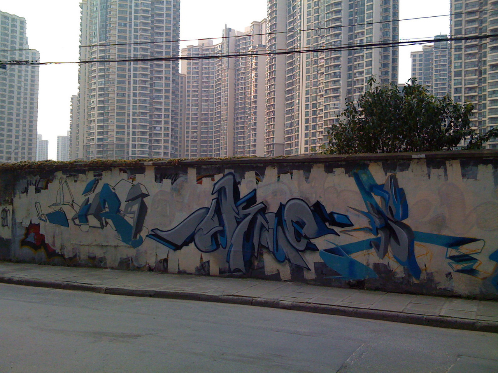
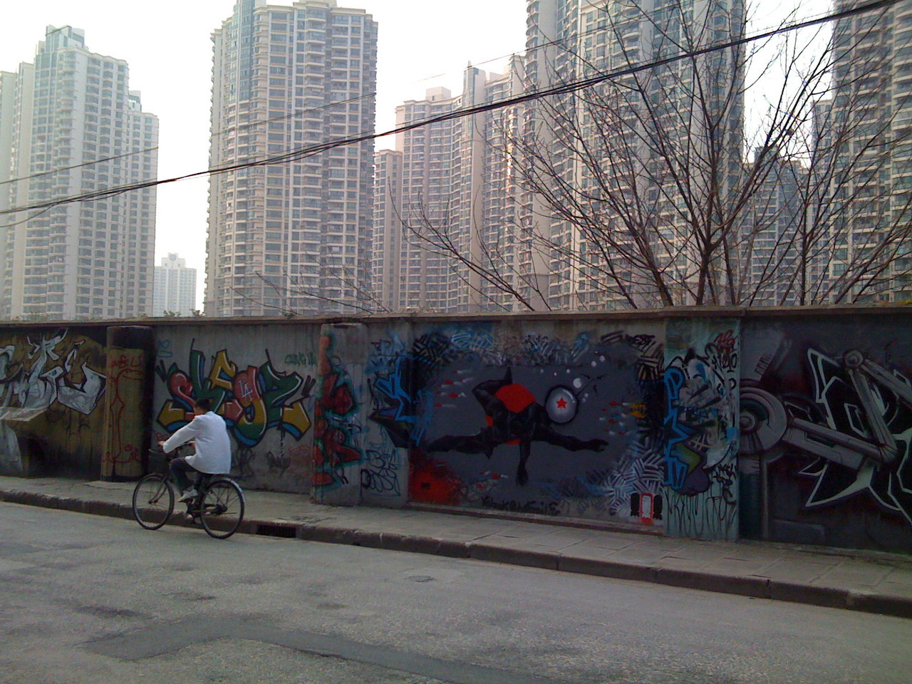
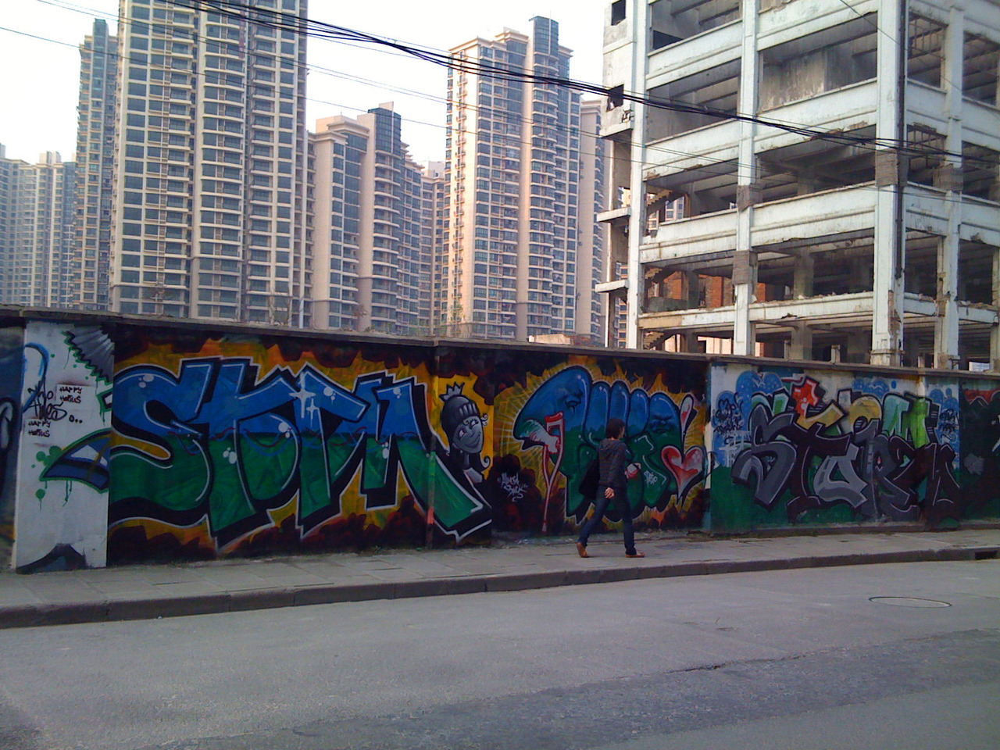
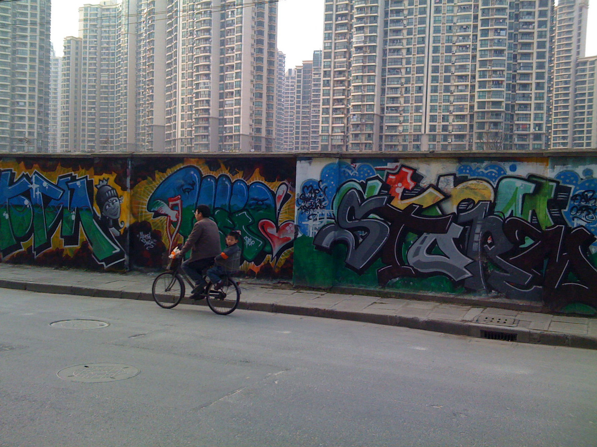
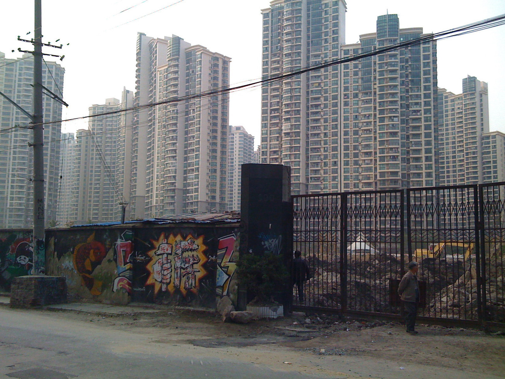
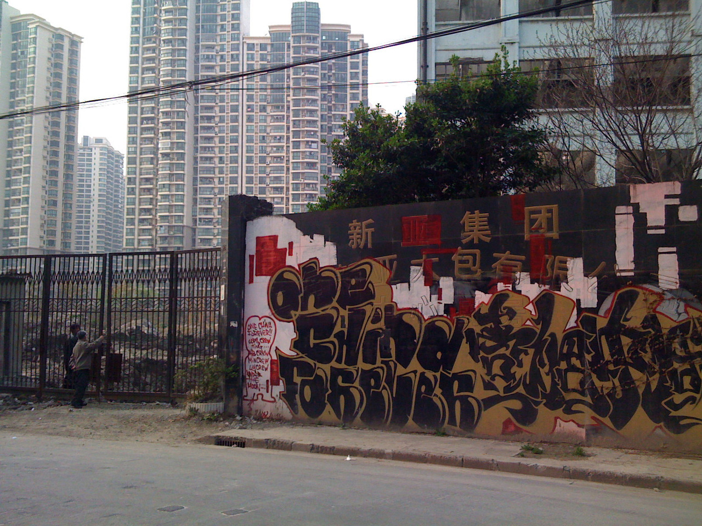
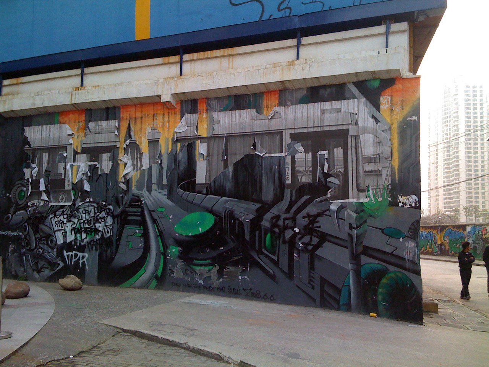
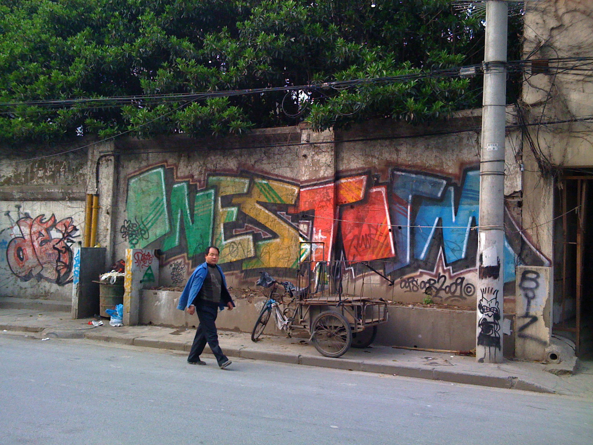

Mon, 23 Aug 2010 16:34:00 · shanghai · graffiti · china · indie
graffiti in shanghai part 1 a friend of mine








Graffiti in Shanghai ~ part 1
A friend of mine asked whether there’s any Graffiti tagging in China, he wondered if such activity is ‘tolerated’ in such communist country. I think that’s a fair question. So to appease his curiosity, here are some pix that I took awhile back to prove that YES, graffiti, as an art form, does exist in China! In fact, what you’ve seen here goes beyond mere tagging, don’t you think?
I know at least handful of Graffiti artists whose works made them some sort of celebrities, and were later commissioned to work on various high profile ads in the country. Yep, looks like Graffiti goes mainstream in China!